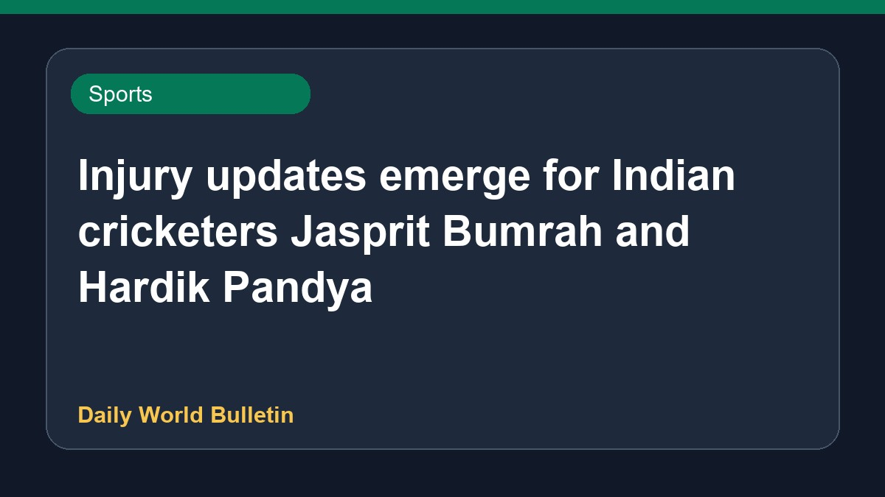

Injury updates emerge for Indian cricketers Jasprit Bumrah and Hardik Pandya

Recent media reports highlight fitness concerns within Indian cricket, focusing on players like Jasprit Bumrah and Hardik Pandya. A former fast bowler has suggested a significant rest period for Bumrah, while discussions continue regarding team selections and recovery timelines for athletes. Additional reports mention domestic developments, including discussions surrounding Auqib Nabi's recent recognition. Analysts emphasize the importance of managing player workloads carefully as selectors weigh available options for upcoming fixtures and international assignments.
Original source: Sports News Sources
India's Injury Concerns Revealed As Report Provides Update On Jasprit Bumrah, Hardik Pandya - NDTV Sports ↗
India's Injury Concerns Revealed As Report Provides Update On Jasprit Bumrah, Hardik Pandya - NDTV Sports ↗